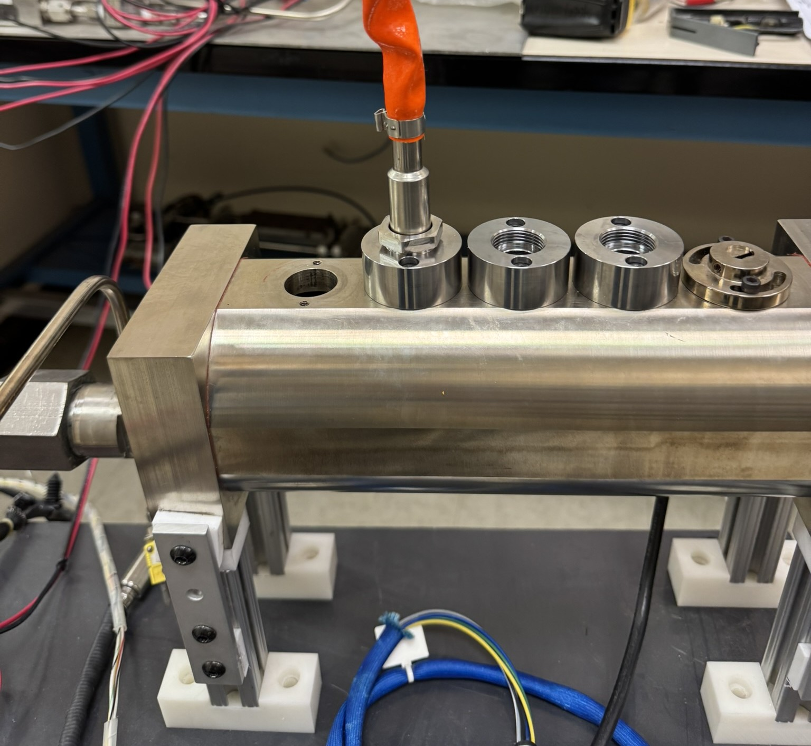
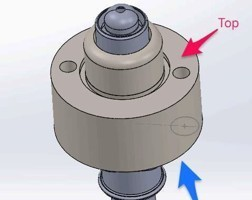
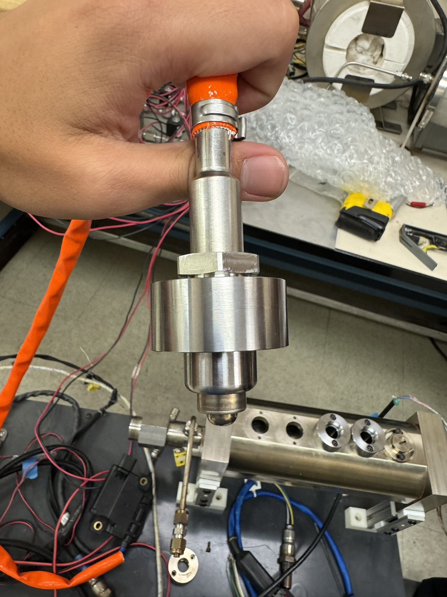
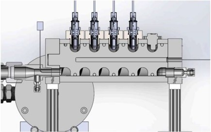
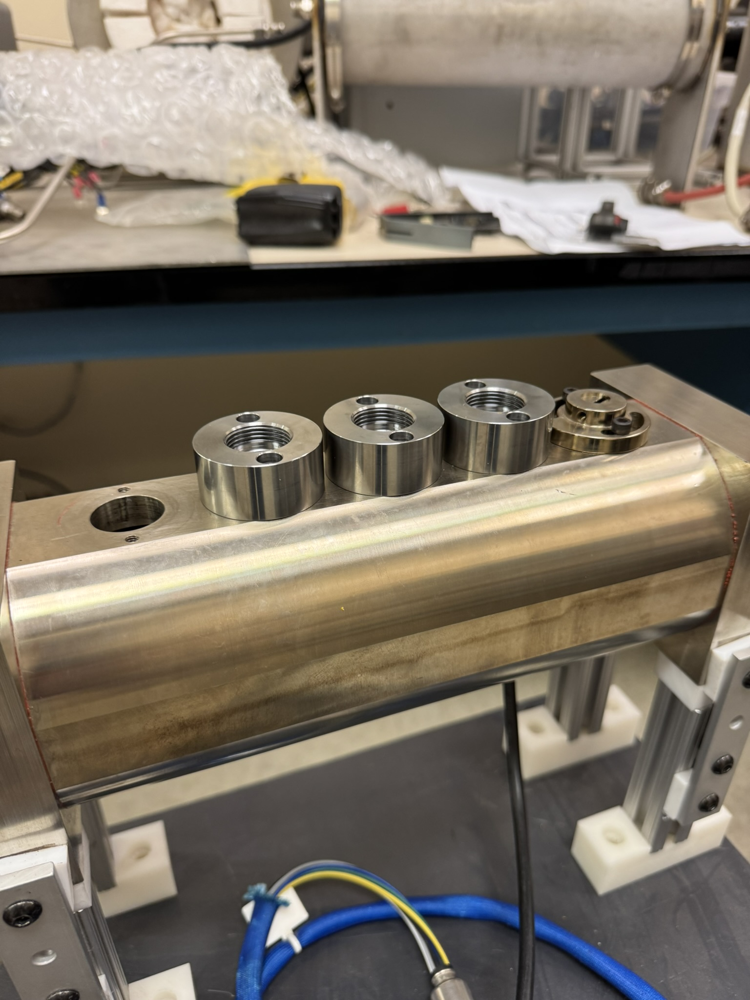
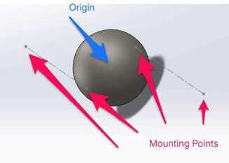
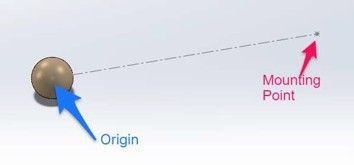
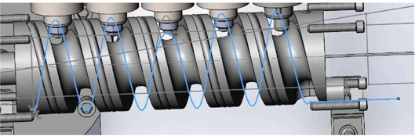
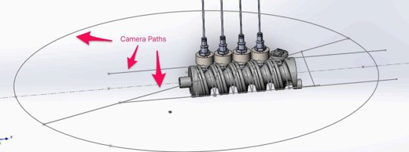

EMISENSE · MECHANICAL ENGINEERING INTERN
In-Situ Spiral Flow ePM Sensor Test Station
Designing and producing a custom fixture for testing electrostatic particulate matter (ePM) sensors on a spiral flow test station. Modeling and animating a Motion Study to demonstrate to future researchers how the flow station works.

OVERVIEW
Adapting an existing test station for a new sensor.
The goal of this project was to design and produce a fixture that would allow an ePM (electrostatic particulate matter) sensor to be tested on an existing spiral flow test station.
The project required modifying an existing insert that had originally been designed around an oxygen sensor, while maintaining the necessary positioning between the sensor and the test fixture.
DESIGN
Modifying the insert around the ePM sensor.
I first recreated the existing oxygen-sensor insert in SOLIDWORKS. I then modified the design to accommodate the dimensions of Emisense's ePM sensor.
A major consideration was maintaining the distance between the base of the fitting and the tip of the sensor. I measured the existing component and its interaction with the sensor before modifying the design around the new dimensions.


ASSEMBLY & MANUFACTURING
From CAD assembly to physical hardware.
After developing the modified insert, I assembled the full spiral flow test station in SOLIDWORKS to verify that the components would fit and operate as intended.
Once the assembly was confirmed, drawings for the custom inserts were sent overseas for manufacturing. The resulting components were then incorporated into the physical test station.


ENGINEERING VISUALIZATION
Turning the test station into a visual explanation.
The next part of the project was creating a detailed animation showing how the test station operates. I used SOLIDWORKS Motion Study to build the animation.
I had no prior experience with Motion Study or SOLIDWORKS animation, so I taught myself the tools needed to create the final visualization.




TAKEAWAYS
More than a CAD exercise.
This project gave me professional experience with SOLIDWORKS part design, drawings, and assembly while introducing me to 3D animation and Motion Study.
More importantly, it showed me how much precision and attention to detail matter when engineering work moves from a classroom environment into a real application. Designing custom components also gave me a better understanding of how engineering decisions translate into manufacturing.
Having to teach myself a completely new tool for the animation was also a valuable reminder that engineering often requires learning whatever skill is necessary to solve the problem in front of you.
TOOLS & SKILLS
LET'S CONNECT